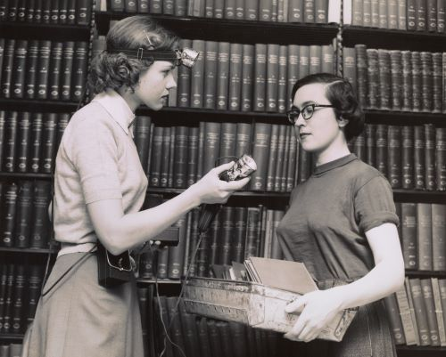

The small page is here for you
...The feelings...
Vintage is something we can be attached to by memories, by
stories and excitement of hearing those memories that were
told as stories to younger people. Sometimes we think of
moments from the past as legendary in terms of fashion, music
or even cars and maybe want to touch/hold or simply look at them,
to try to understand how it's like to live like that.
We all just seek fun and smiles, so here you go!
what can be more fun than a photo in black & white but with
the people's smiles so bright?
What is the benefit of vintage today?
It's not only aesthetically pleasing things it's much
more. The vintage is not only unique by looks and
history but by the opportunity to have a place in
nowadays to protect the Earth.
Vintage Clothing
If all of us would take our grand grand parents clothes and start investing in vintage
clothing we would be living in a much clearer environment, because recycling and
reusing those history pieces would reduce carbon emissions and preserve water,
energy, and other resources. To put it simply: the clothes is already in existence and
no current resources would be used. Just think about how it'd be great to wear,
something that has a purpose, that helps the Earth to be patient with us. Pure bliss!

What can serve for decades?
Only higher-quality materials and craftsmanship.
Before the fast mass-produce of EVERYTHING that we have now, previously it was crafted by hand to last
for decades, the reason for that is the speed of life and the thought for the future from the craftsmen, they
were putting their work for people to spend money only one time instead of multiple times for the same
item. But right now the resources of the Earth are not valued and for huge manufacturing companies it's not
a problem to make 1 million items, 500,000 of which will be defective, so the people would need to buy
more and more. And for the surprise the rest 500,000 will appear defective a little later, it won't serve even
10 years, unfortunately, if not less.
We can enjoy the precious and high-quality vintage things and help The Earth breathe.
Fun Fact: classic cars are proven to pollute less than new cars and even electric cars.
Sounds weird, right? Click [here] to read more about it.
If talking seriously, there is different ways of development globally and personally and if each one would
personally pick the less egoistic way of development, then we have the brilliant past, present and future.
'Live Wise, be a gift to the present times'